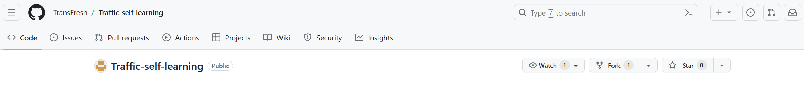
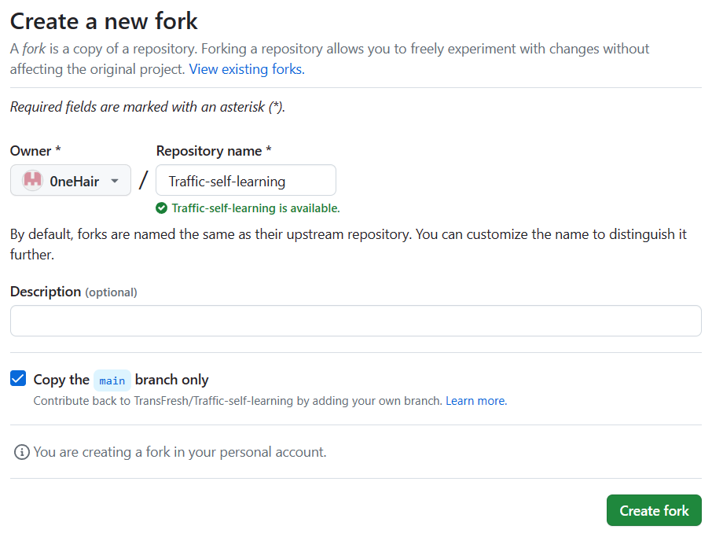
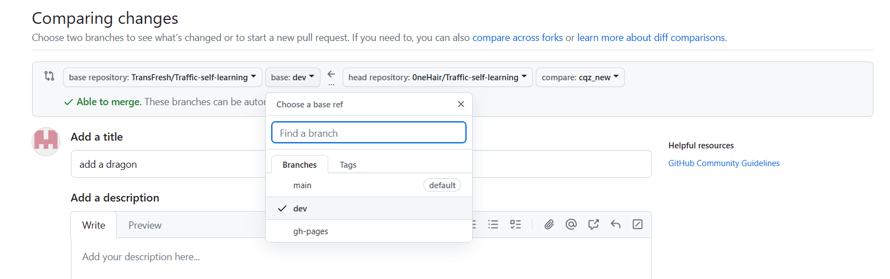
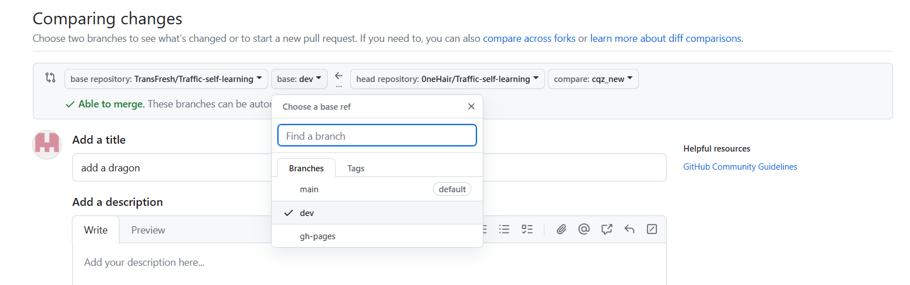

如何投稿¶
本文档只提供对投稿基本要求和投稿方式的介绍，具体的要求如: 稿件应该归属哪个文件夹或者插入到哪个位置等，请参考对应模块文件夹下的 README.md 文件。
投稿要求¶
你可以分享任何与交通工程相关甚至不相关的内容。包括但不限于: 对课程的见解，对工具的介绍，对未来发展出路的介绍 (如果你是“过来人”的话) 等等。请你在分享时尽量做到真实、客观，不要大张旗鼓地夹带私货。
稿件时效性¶
如果你的稿件提供的信息存在着过时的可能，如: 学校政策，课程资料等，在投稿时请附上相应信息的更新时间，以免误导读者。我们会使用如下警告卡片来提示时间敏感内容。
更新于 2023年12月3日
投稿方式¶
我们提供如下两种投稿方式: 通过 GitHub ，通过邮件。你可以选择任意一种方式进行投稿，如果你在投稿的同时还希望上传资源文件，请使用方式2将资源文件以邮件形式发送给我们，当你的 pull request 被成功合并、资源文件审核完成后，我们会为你提供的资源文件添加链接。
方式1 通过 GitHub 投稿 (推荐)¶
Fork 及配置上游仓库¶
-
Fork 仓库: 单击
Fork按钮，在你的账号下创建Traffic-self-learning仓库的副本注意: 取消勾选
Copy the main branch only

-
将 Fork 仓库克隆到本地
-
创建 Fork 仓库的上游仓库 (源仓库)
使用
-v命令检查当前仓库已配置的远程仓库，得到如下输出
Fork 仓库与源仓库同步¶
-
从上游拉取更新
-
将更新同步至 Fork 仓库 (如果当前已经是最新版本，则不需要进行此步骤)
创建特性分支¶
我们推荐你在特性分支上完成内容修改
完成投稿¶
- 确保 Fork 仓库已同步至最新状态
-
将投稿内容推送到 Fork 仓库
-
当投稿内容被成功推送到远程仓库后，在仓库主页点击
Compare & pull request按钮pull requests界面 (或者点击Pull requests界面选择pull new request)，选择源仓库的dev分支，选择 Fork 仓库的特性分支 
 -
点击
Create pull request，填写描述信息 - 点击
Create pull request完成投稿
方式2 通过邮件投稿¶
直接将你的稿件和资料等通过邮件的形式发送给我们，邮件地址为: seu_tcctt@163.com
为了防止邮件中遗漏重要的信息，我们推荐你参考这份模板
我们建议你使用 Markdown 的格式投稿 (排版格式参考: Markdown 排版要求)，但你也可以选择其他易于查看、编辑的文件格式进行投稿。为了保证文件格式的一致性，我们可能会对你的稿件进行修改 (主要是格式上的调整) ，并将修改后的稿件重新发送给你，如果你同意我们的修改，则你的内容在不久后就会被添加到网页中。